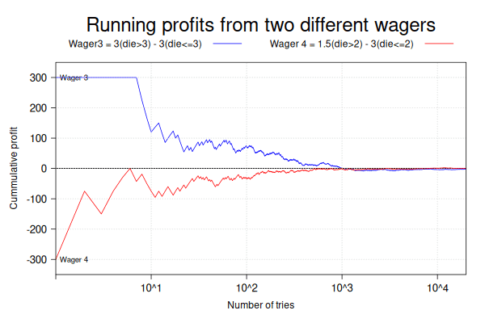

numsimulations = 20000
numframes = 30
set.seed(1892)
dievalues = seq(1,6)
for (i in 1:numframes){
die3 = sample(dievalues, numsimulations, replace=T)
die4 = sample(dievalues, numsimulations, replace=T)
profit3 = 300*( die3>3 ) - 300*( die3<=3 )
profit4 = 150*( die4>2 ) - 300*( die4<=2 )
runningprofit3 = cumsum(profit3) / seq(1, numsimulations)
runningprofit4 = cumsum(profit4) / seq(1, numsimulations)
# more code follows here to generate the plots and the jpeg files
}Why doing this?
Do you ever feel like a plain graph is not sufficient to explain some trend in your data or the solution of a mathematical model? For those times, generating animations can be just what you need. They can also become visualization aids during data exploration or a means to explain observations to yourself and others.
This is by no means an exhaustive list of use cases, however, they are pretty common and their impact can be high. The deliverable is an embedded moving graph for your presentation or web content. After all, if an image is worth a thousand words then an animation should be worth a bit more.
This workflow is the basis to create the visualizations used in this LinkedIn post [1]

In that post this animation was created using a simple but effective workflow.
- Run a numerical model using simulated input
- The output of each run is used to construct a plot.
- Each plot is saved to a jpeg file.
- Then a GIF file is constructed with all the jpeg files.
When applying this algorithm to a simulation, the input in Step 1 above usually comes from a pseudo random number generator in your language of choice. In this case I used the following R code to generate the data before constructing the plots and the animation. The code computes the cumulative profit or loss from repeatedly playing the same wager for a very long time. Eventually the expected result should tend to zero for either wager 3 or 4.
Line 1 sets the number of simulation points to 20,000 so we get sharp plots. Line 2 sets the number of frames that the animation will have. Line 4 defines a fixed value for reproducible results from the pseudo random number generator used by the sample function that will be used in lines 9 and 10. Line 5 defines the 6 possible results of rolling a single die. Line 7 starts a loop to generate the frames of the animation. In lines 9 and 10 two vectors of 20,000 elements are created, each one simulates one roll of a fair die. The code in lines 12 and 13 create the two vectors of 20,000 elements, each represents the profit resulting from rolling the die once. Each throw is an independent event, thus their individual profit can be computed with the input vectors die3 and die4.
Lines 15 and 16 compute the cumulative profit or loss resulting from sequentially realizing the 20,000 wagers sequentially.
The following code inspects some of the vectors generated above for each frame. R is a natively vectorized language, therefore no libraries are necessary
length(runningprofit3)
#> [1] 20000
head(runningprofit3)
#> [1] -300 0 -100 0 60 100
tail(runningprofit3)
#> [1] -2.925731 -2.910582 -2.895434 -2.880288 -2.895145 -2.880000
head(runningprofit4)
#> [1] -300.0 -75.0 0.0 37.5 60.0 75.0
tail(runningprofit4)
#> [1] -1.822956 -1.815363 -1.830275 -1.845185 -1.860093 -1.852500One can see how the initial profit or loss can be large, however the net value tends to be near zero after many repetitions.
Step 2 is to construct a plot with this data.
The graphic package Trellis is designed to work on data presented in the so-called long format. The idea is that the dataframe with all the data has a column representing a categorical variable representing the subgroup the data belongs to. This is a fundamental idea behind this package. This plotting of many subgroups in a grid-like pattern is what is called facetting in ggplot2 terms.
In lines 1 and 2 above, separate data frames each of 20,000 rows are created. In line 3 they are stacked vertically together to form a single data structure with 40,000 rows.
The following calls to the first and last three lines of the dataframe illustrate the long format of the data. The column wager represent the subgroup each row belongs to: wager 3 or 4.
head(df, n = 3)
#> wager runningprofit tries
#> 1 3 -300 1
#> 2 3 0 2
#> 3 3 -100 3
tail(df, n = 3)
#> wager runningprofit tries
#> 39998 4 -1.845185 19998
#> 39999 4 -1.860093 19999
#> 40000 4 -1.852500 20000References
[1]
Adames P. Expected Values and Variance 2021.